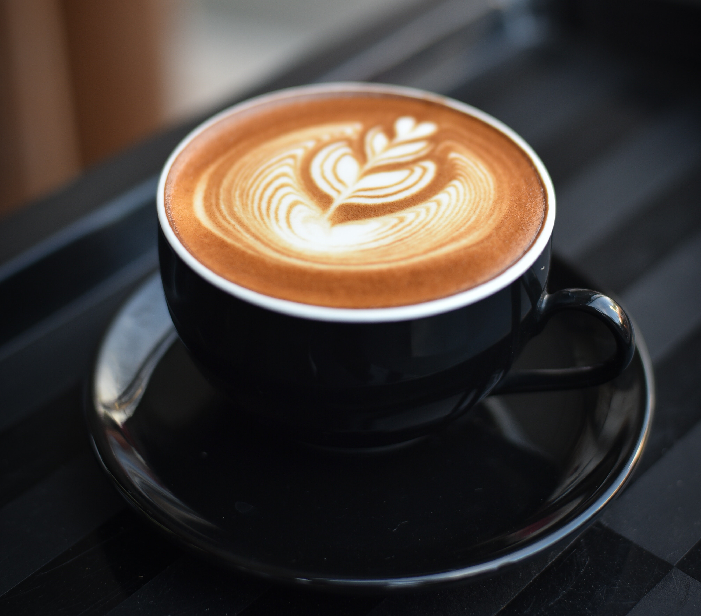
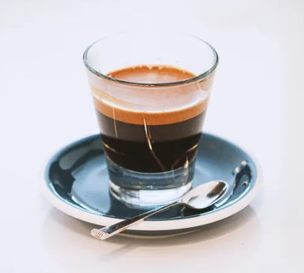
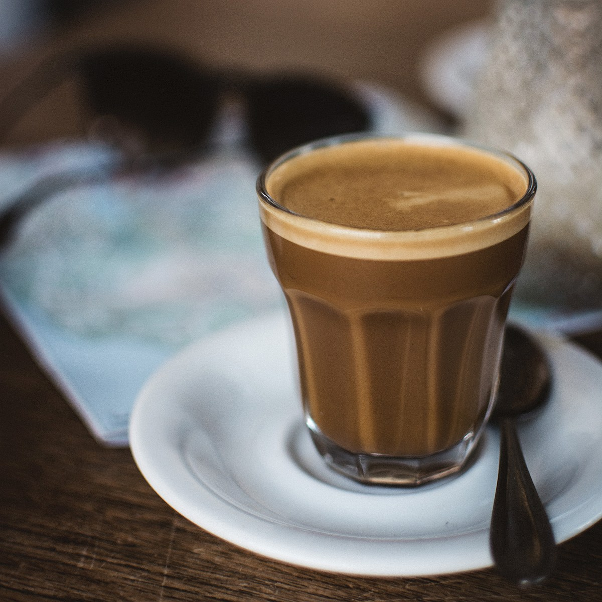

Try out!!
- Latte 
- Cappuccino
- Americano
- Espresso 
- Cortado 
A latte or caffè latte is a milk coffee that boasts a silky layer of foam as a real highlight to the drink. A true latte will be made up of one or two shots of espresso, steamed milk and a final, thin layer of frothed milk on top. These elements combined result in a balanced milky coffee that possesses an aesthetically pleasing look and a smooth texture. A latte or caffè latte is a milk coffee that is a made up of one or two shots of espresso, steamed milk and a final, thin layer of frothed milk on top. If you don't drink dairy milk, you can easily swap it for a plant-based alternative like soy, oat or coconut milk.

A cappuccino is the perfect balance of espresso, steamed milk and foam. This coffee is all about the structure and the even splitting of all elements into equal thirds. An expertly made cappuccino should be rich, but not acidic and have a mildly sweet flavouring from the milk. And, because the milk is not actually mixed in it gives the espresso a stronger flavour.A cappuccino is the perfect balance of espresso, steamed milk and foam. This coffee is all about the structure and the even splitting of all elements into equal thirds.

An americano is quite simply just hot water and espresso. It’ll either be served 1/2 and 1/2 or 1/3 espresso to 2/3 water, depending on the coffee shop in question or how you’ve chosen to brew it. There is dispute about whether the espresso or the water should be added first, but in the case of the americano, espresso should always be added first as the crema mixes in and creates a more mellow, even taste. But some people may add it depending on their personal preference. Whilst most other espresso-based coffee drinks include milk, such as the cappuccino or latte, the americano stands out amongst them. An americano is just water and espresso. It’ll either be served 1/2 and 1/2 or 1/3 espresso to 2/3 water, depending on the coffee shop in question or how you’ve chosen to brew it. Traditionally, there will be no milk but some people may add it depending on their personal preference. Whilst most other espresso-based coffee drinks include milk, such as the cappuccino or latte, the americano coffee stands out amongst them.
Espresso is a delicious concentrated form of coffee, served in shots and it’s often the coffee base of many other beverages, such as cappuccino, latte, americano and macchiato. An espresso is intense and bold, but nonetheless delicious, and the espresso is usually served in small demitasse-style cups for this reason. Espresso is a concentrated form of coffee, served in shots. It's made of two ingredients - finely ground, 100% coffee, and hot water. This method of brewing makes for a bold, rich, intense shot of coffee, which then forms the base of many other types of coffee drinks, such as a cappuccino, latte, americano and macchiato.
Unlike other coffee types the milk isn’t texturised and instead, Cortado coffee is made with lightly steamed milk, no froth or foam. The steamed milk on top reduces the acidity of the coffee and creates a micro-foam which doesn’t separate from the espresso, giving it a strong and rich flavour. Cortado translates to cut, meaning that the coffee is cut with milk. A cortado coffee is made of equal parts espresso and steamed milk. It is served with a double shot espresso.